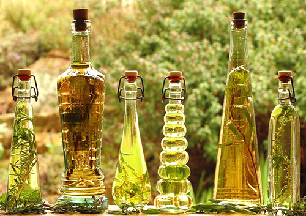

Яблочный уксус - это природный эликсир здоровья, постоянно пользующийся заслуженной популярностью в народе. Нина Башкирцева убедительно доказывает, что широкая известность яблочного уксуса - не сиюминутная дань моде. В книге собраны сведения об истории использования яблочного уксуса эскулапами Древней Греции и Средневековья, приведены данные о его изучении современных ученых и фитотерапевтов.
Целительные силы уксуса столь велики, что его можно использовать и для приготовления растворов для лечения различных заболеваний, и для уменьшения излишнего веса. С его помощью вы сможете сохранить красоту лица и тела и приготовить разнообразные полезные и питательные блюда.
Используйте силу природного лекаря себе во благо.